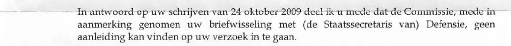

Prueba · Carta
CTIVD a Giltay, 27 de octubre de 2009
El pasaje
«En respuesta a su escrito del 24 de octubre de 2009, le comunico que la Comisión, teniendo también en cuenta su correspondencia con (el secretario de Estado de) Defensa, no puede encontrar motivo alguno para atender su solicitud». Página 1, el texto de la carta, que consta de un solo párrafo. Traducido del neerlandés; el texto original figura a continuación.
Texto original
“In antwoord op uw schrijven van 24 oktober 2009 deel ik u mede dat de Commissie, mede in aanmerking genomen uw briefwisseling met (de Staatssecretaris van) Defensie, geen aanleiding kan vinden op uw verzoek in te gaan.”

Por qué importa este documento
En esta carta del 27 de octubre de 2009, el presidente de la CTIVD (comisión de supervisión de los servicios de inteligencia y seguridad), A.H. van Delden, escribe a Giltay que la comisión, teniendo también en cuenta la correspondencia de Giltay con Defensa, «no puede encontrar motivo alguno» para atender su solicitud. Van Delden sucedió a I.P. Michiels van Kessenich-Hoogendam, que en enero del mismo año había escrito a Giltay como presidenta. En estas dos cartas de presidentes sucesivos se basa la afirmación del ensayo de que la investigación de la CTIVD, el segundo pilar de la negativa de Defensa en 2017, no existía, y de que así constaba por escrito desde 2009.
Procedencia
- Documento
- Carta, una página
- Remitente
- Commissie van Toezicht betreffende de Inlichtingen- en Veiligheidsdiensten (CTIVD), la comisión de supervisión de los servicios de inteligencia y seguridad, Anna van Saksenlaan 50, La Haya
- Destinatario
- E. Giltay
- Fecha
- 27 de octubre de 2009
- Referencia
- 2009/0212
- Asunto
- «Uw schrijven d.d. 24 oktober 2009» (su escrito del 24 de octubre de 2009)
- Firmado
- A.H. van Delden, presidente de la CTIVD, con la firma conjunta de N. Verhoeven, secretario de la comisión. Ambas firmas están tachadas en la imagen escaneada
- Referencias
- La carta de Giltay del 24 de octubre de 2009 y su correspondencia con (el secretario de Estado de) Defensa; la carta anterior de la comisión a Giltay, del 12 de enero de 2009, referencia 2009/0008, dedoofpotgeneraal.
nl/ doc/ ctivd1.pdf - Idioma
- Neerlandés
- Fuente
- Imagen escaneada en dedoofpotgeneraal.
nl/ doc/ ctivd2.pdf - Véase también
- CTIVD a Giltay, 12 de enero de 2009Ministerio de Defensa a Giltay, 6 de junio de 2017
Citado en: el ensayo «La prohibición cayó, el libro quedó en pie» en el capítulo (7) «Ninguna respuesta sobre el fondo» y en la diapositiva «CTIVD · 2009–2017» de la presentación «La historia en el mapa».
Ficha de prueba: https://
Documento: https://
Modificado por última vez el 13 de septiembre de 2026, consultado el 27 de noviembre de 2026.

Esta página es una ficha de prueba del libro El general del encubrimiento de Edwin Giltay y del sitio web que lo acompaña.